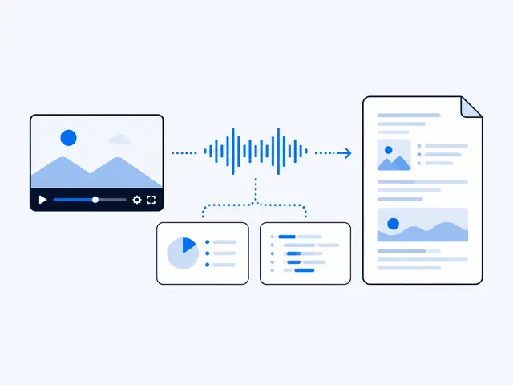

Turn training videos into SOPs people actually read
Record the process once as a screen recording, run it through VideoDoc, and you get the timestamped narration plus a screenshot of every stage, captured from the screen and not your webcam. Have your AI shape that into numbered steps, verify it once against reality, and you have an SOP with real pictures for the cost of one recording.
Every team has that one process living in one person's head, and the standard fix is "record a training video". So someone records twenty minutes of clicking and talking, it goes into a shared drive, and six months later a new person watches it at 1.5x taking their own incomplete notes. The video was supposed to be the documentation. It became homework instead.
Written SOPs beat training videos for one plain reason: nobody can follow a video while doing the task. You cannot pause with your elbow while both hands type. A written step list sits beside the work and moves at the reader's speed. The problem was always that writing SOPs is miserable. Screenshot, crop, paste, describe, repeat, forty times.
- Record the process once as a screen recording, saying the why as well as the what while you click.
- VideoDoc, fully offline, produces the timestamped narration plus a sharp capture of every distinct screen.
- One AI prompt shapes it into a numbered SOP, and one walk-through against reality makes it trustworthy.
The workflow: record once, write never
Record the walkthrough once, and let the document write itself.

- Record the process naturally. OBS, Teams, Loom, anything that produces a file. Talk while you click, saying the why as well as the what: "I export as CSV here because the old format breaks the tool downstream." To hear how the transcript reads before you commit, the free browser version takes a local file with nothing uploaded.
- Feed the file to VideoDoc. It runs fully offline on your machine, which your IT department will appreciate and which is where local tools beat every cloud option in my comparison of video to text converters, and produces the timestamped narration with a sharp capture of every distinct screen you passed through. The screenshots you dreaded taking are simply already taken.
- Shape it with one prompt. Give the PDF to your AI, the same second move as summarizing a video properly with ChatGPT: "Turn this into a numbered SOP. One action per step, imperative voice, keep my reasons as notes under the step they belong to, and reference the captures by timestamp." Out comes the skeleton of a real SOP.
- Verify against reality, once. Walk the steps yourself or hand them to the newest person on the team. Where they stumble is where the recording skipped something. Fix those lines.
Check: This step is not optional, an unverified SOP is a rumor with numbering.
The part that makes this sustainable
SOPs die of staleness.
- The tool updates its interface and your beautiful document is now wrong in four places.
- In this workflow the update cost is one re-recording: run through the changed process for five minutes, convert, re-shape, done.
- When updating costs five minutes, documentation actually stays updated.
Check: When it costs an afternoon, it never happens, and everyone quietly goes back to asking the one person who knows.
Your next SOP is one screen recording away.
VideoDoc turns the recording into narration plus every screenshot, fully offline on your machine. $19 once, lifetime. Test the idea free in your browser first.
Quick questions
Do I need to talk during the recording?
It helps a lot. Your narration becomes the step descriptions and your reasons become the notes. A silent recording still yields the screenshots, but you will write the words yourself.
Are the screenshots good enough to publish in the SOP?
Yes. Captures follow the screen at up to full HD with Best quality, so menus and field names stay readable. Crop in your document tool if you want tighter frames.
Is this safe for internal tools and client data?
Local files process fully offline, nothing uploads. Still record with test data where you can, the same care you would take with any screenshot.
Pick the process everyone asks that one person about, and record it tomorrow while doing it for real. Twenty minutes of talking beats a documentation project that never starts.

I am a telecom engineer and business analyst from Pakistan, and I build small honest desktop tools under Designesh. I made VideoDoc because I wanted my AI to read the lectures I study from. Everything here is tested on my own machine first.